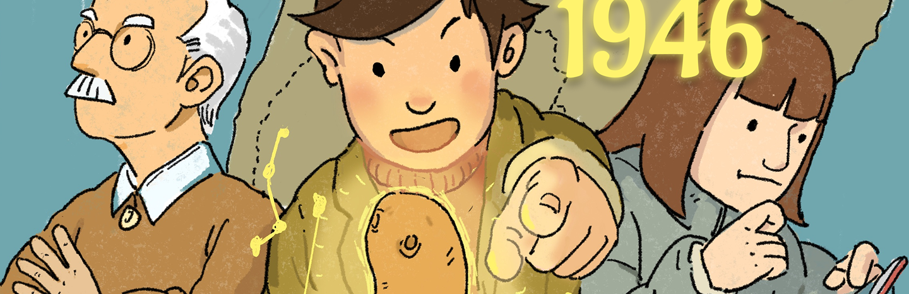
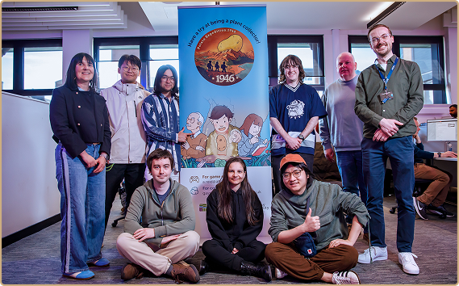
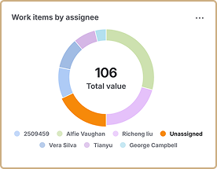
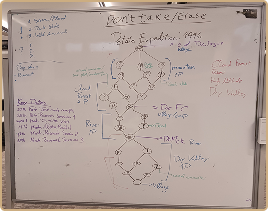
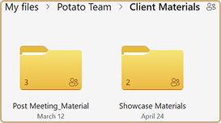
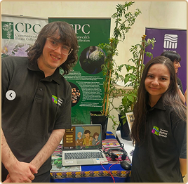
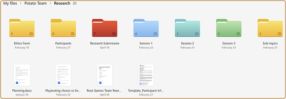
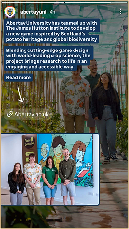

Project Overview
Potato Expedition: 1946 is a 2D adventure-puzzle game which aims to primarily educate children on the importance of potato crops in an engaging and entertaining format. You play as Jack, the adventurer plant collector who journeys through 1946’s South America to find and collect wild potato plants, which might hold the key to defeat the Late Blight affecting British crops.
Gameplay Video
Production
My primary responsibility throughout the project was to support the team in maintaining a manageable scope, ensuring clear communication, and making consistent progress towards the project milestones, while also managing and maintaining regular communication with the client. In addition, I was responsible for playtesting and quality assurance management, as well as overseeing the research component of the project during this term.
Project Timeline
- Ideation
- Pre-production
- Production / Polishing
- Week 1
- Functional PrototypeWeek 4
- Alpha BuildWeek 8
- Vertical SliceWeek 11
Team and Project Management
- Leadership → coordinated the team, facilitated collaboration, and managed interpersonal conflict.
- Team Communication → developed and maintained an effective communication plan.
- Milestone Planning → planned and tracked key project milestones.
- Scope Definition and Management → defined, monitored, and managed project scope.
- Development Progress Tracking → monitored development progress, identified potential issues, and communicated regular updates to the team.
Client Communications
- Coordinated communication between the development team and the client.
- Organised presentation content and conducted client meetings.
- Prepared and distributed presentation materials to the client following meetings.
- Provided game builds and gameplay videos for client review and feedback.
- Documented and tracked client feedback.
UX Research & QA Management
- Recruited and coordinated playtesters throughout the testing process.
- Designed and developed surveys to collect structured playtester feedback.
- Conducted structured and unbiased playtesting sessions.
- Recorded, organised, and digitised playtesting notes and feedback.
- Analysed and communicated playtesting results and key findings to the development team.
- Maintained and coordinated the playtesting schedule to ensure testing activities were completed effectively and on time.
- Authored the research paper, “How Can a Game Increase Interest and Engagement with the Topic of Potato Taxonomy?”
UI Design
- I designed the game’s UI using the software tool Figma, with icons from the website Flaticon.
- This was not my intended role. I took it over later in development, leading to a UI that isn’t completely polished.







Further Development
Following the initial development of the prototype, I was contacted by representatives from the James Hutton Institute, Gaynor McKenzie and Paul Shawn, with whom we collaborated during the term, to discuss the potential for further development of the game. The game has received considerable interest from the science sector and has been showcased at a variety of events, including the Edinburgh Science Festival, the Masters Showcase 2026, and the Royal Highland Show. The project is currently paused; however, there remains potential and interest in pursuing its further development in the future.
